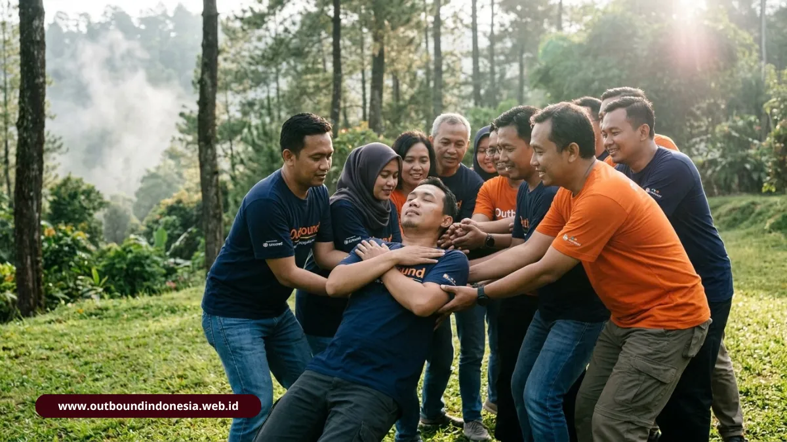

Metode experiential learning outbound adalah cara belajar yang menempatkan peserta pada pengalaman nyata berupa permainan, lalu memandu mereka merefleksikan, merumuskan konsep, dan mencoba perilaku baru. Siklus ini mengubah permainan menjadi kebiasaan kerja yang bisa dipakai kembali setelah acara selesai di kantor.
Apa Itu Siklus Belajar Kolb dalam Outbound?
Siklus Kolb (1984) adalah model empat tahap yang menjelaskan bagaimana orang dewasa belajar dari pengalaman. Dalam outbound, setiap tahap dipetakan pada fase tertentu dalam rangkaian kegiatan.
- Concrete Experience (Pengalaman Nyata): Peserta mengalami langsung simulasi seperti ice breaking, Amazing Race, atau jembatan kepercayaan.
- Reflective Observation (Observasi Reflektif): Berlangsung ketika kelompok menengok kembali dinamika yang baru terjadi, misalnya melalui evaluasi melingkar atau sesi Break the Mindset.
- Abstract Conceptualization (Konseptualisasi Abstrak): Mengubah temuan menjadi prinsip, seperti komunikasi terbuka dan kepemimpinan bersama.
- Active Experimentation (Eksperimentasi Aktif): Membawa prinsip itu ke dunia kerja, misalnya dengan membentuk forum koordinasi berkala antardivisi.
Fasilitator yang melewatkan tahap kedua sampai keempat hanya menghasilkan kegiatan menyenangkan tanpa dampak yang bertahan.
Apa Bukti Empiris Pengaruh Outbound terhadap Kolaborasi?
Riset Cahyaningrum dkk. (2025) pada 78 guru SMK dari tiga jurusan mencatat kenaikan skor di kelima unsur kolaborasi menurut kerangka Johnson dan Johnson (2009). Skor diukur pada skala 1 sampai 10, sebelum dan sesudah pelatihan.
| Unsur Kolaborasi (Johnson & Johnson, 2009) | Skor Sebelum | Skor Sesudah | Kenaikan Persentase |
|---|---|---|---|
| Group Processing | 5,7 | 8,9 | 56,1 persen |
| Social Skills | 6,0 | 9,0 | 50,0 persen |
| Individual Accountability | 5,5 | 8,2 | 49,1 persen |
| Positive Interdependence | 6,2 | 9,1 | 46,8 persen |
| Promotive Interaction | 5,8 | 8,4 | 44,8 persen |
Lonjakan terbesar terjadi pada Group Processing. Peserta belajar menilai cara kerja kelompoknya sendiri secara jujur. Social Skills mencakup empati, kontrol emosi, dan penyelesaian konflik. Temuan ini mengisyaratkan bahwa sesi refleksi layak diberi porsi besar dalam rundown, bukan sekadar pelengkap di ujung acara.
Games Outbound Apa Saja yang Cocok untuk Tiap Keterampilan?
Dua belas games berikut dikelompokkan menurut keterampilan yang paling banyak dilatih. Satu permainan dapat melatih beberapa keterampilan sekaligus, tetapi pengelompokan membantu fasilitator memilih secara terarah.

Permainan kepercayaan seperti Trust Fall dan Minefield menumbuhkan rasa saling percaya dalam tim.
Games Apa yang Melatih Komunikasi?
- Blind Walk: satu peserta berjalan dengan mata tertutup dituntun suara atau sentuhan rekannya. Pelajaran utamanya adalah ketepatan instruksi.
- Komunikasi Berantai: pesan disampaikan dari orang ke orang dengan syarat tertentu, lalu isi akhirnya dibandingkan dengan pesan awal. Distorsi informasi menjadi bahan diskusi.
Games Apa yang Melatih Kepercayaan?
- Trust Fall: seorang peserta jatuh ke belakang dan ditahan kelompok. Fasilitator wajib memastikan teknik penahanan yang aman.
- Bridge of Trust: peserta melintasi lintasan sambil dipandu dan dijaga rekan.
- Minefield: peserta menembus area berisi rintangan dengan panduan verbal dari rekan yang melihat.
Games Apa yang Melatih Kerja Sama dan Koordinasi?
- Human Knot: peserta saling menggenggam tangan secara acak lalu mengurai simpul tanpa melepas genggaman.
- Spider Web: seluruh anggota melewati jaring tali tanpa menyentuhnya, sehingga perlu urutan dan bantuan angkat.
- Pipa Bocor: kelompok mengisi wadah air dengan memindahkan air lewat pipa berlubang, menuntut pembagian tugas.
- Transfer Ball: bola dipindahkan antaranggota dengan aturan sentuhan terbatas, melatih ritme dan sinkronisasi.
Games Apa yang Melatih Strategi dan Problem Solving?
- Tower Building: kelompok membangun menara tertinggi dari bahan terbatas.
- Marshmallow Challenge: tim menyusun struktur penopang marshmallow dari spageti, selotip, dan benang dalam waktu singkat.
- Treasure Hunt: tim memecahkan petunjuk berurutan untuk menemukan titik akhir, menuntut pembagian peran dan manajemen waktu.
Bagaimana Cara Memfasilitasi Sesi Debriefing yang Efektif?
Debriefing yang efektif dimulai dari pertanyaan faktual, bergerak ke makna, dan ditutup dengan komitmen tindakan tertulis. Fasilitator memandu, bukan menjawab sendiri.
Apa Itu Teknik Funneling?
Funneling adalah urutan pertanyaan dari yang luas ke yang spesifik. Fasilitator memulai dengan "apa yang terjadi", lalu "mengapa itu terjadi", kemudian "apa artinya bagi pekerjaan kita". Urutan ini menjaga peserta tidak melompat ke kesimpulan sebelum menelaah kejadian.
Bagaimana Menggunakan Refleksi Metafora?
Fasilitator mengaitkan permainan dengan situasi kerja. Simpul pada Human Knot, misalnya, dapat dibahas sebagai tumpang tindih tanggung jawab antardivisi. Metafora membuat pelajaran terasa relevan tanpa menunjuk individu tertentu.
Bagaimana Menyusun Action Plan Pascakegiatan?
Setiap kelompok merumuskan satu sampai tiga komitmen yang spesifik, punya penanggung jawab, dan bertenggat waktu. Contohnya rapat koordinasi dua mingguan antardivisi. Komitmen ini adalah wujud tahap Active Experimentation dalam siklus Kolb.
Porsi debrief sebaiknya disesuaikan dengan tujuan. Klasifikasi Priest, Simon dan Gass (1992) menyarankan debrief sekitar 25 persen waktu untuk program edukasi dan 50 persen untuk program pengembangan perilaku.
Kesimpulan Praktis
Susun rundown dengan urutan permainan, refleksi, perumusan konsep, dan rencana tindakan. Pilih games sesuai keterampilan yang ingin dikuatkan, bukan karena populer. Sediakan fasilitator yang mampu mengajukan pertanyaan bertahap dan mencatat komitmen peserta.
Ukur hasilnya dengan survei sebelum dan sesudah kegiatan memakai lima unsur kolaborasi sebagai indikator, lalu tinjau komitmen peserta setelah beberapa minggu.

Tim Outbound Indonesia
Praktisi instruktur certified BNSP, spesialis keselamatan high rope, dan konsultan team building corporate.